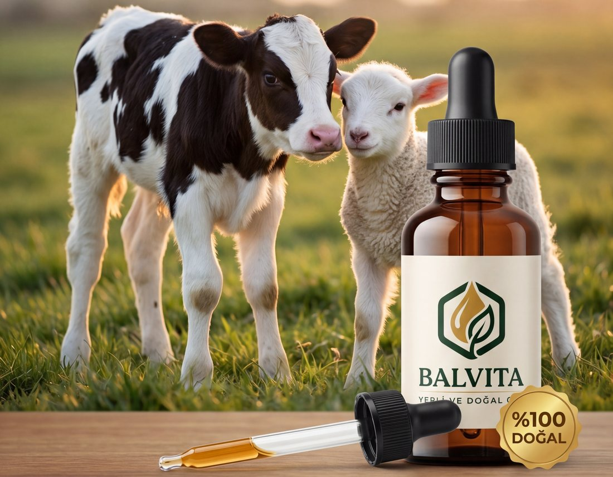

Aminoasit & Vitamin Destekli
Yavrularınızın Güçlü Başlangıcı

Sağlıklı Yenidoğanlar, Güçlü Yarınlar
BALVİTA, doğanın gücünü bilimle birleştirerek hayvanlarınızın sağlığını ve performansını destekler. Propolis, aminoasit ve vitaminlerle zenginleştirilmiş formülümüz, bağışıklık sistemini güçlendirir ve sağlıklı gelişimi destekler.
Arıların doğal olarak ürettiği; güçlü antioksidan ve doğal koruyucu özellikleriyle bilinen değerli bir maddedir. BALVİTA, bu doğal gücü yavru hayvanların sağlıklı gelişimi için bir araya getirir.
Yenidoğan döneminden itibaren hayvanlarınızın sağlıklı gelişimine çok yönlü doğal destek.
Bağışıklık sistemini destekleyerek dış etkenlere karşı dirence katkı sağlar.
Sağlıklı sindirim için doğal destek sunarak besin değerlendirmesine katkıda bulunur.
Solunum yollarının sağlıklı çalışmasına doğal içeriğiyle destek olur.
Aminoasit ve vitamin desteğiyle sağlıklı gelişimi ve günlük performansı destekler.
Hayatın ilk günlerinde güçlü bir başlangıç için yenidoğan döneminde destek sağlar.
Bağırsak florasının dengesine ve sağlıklı çalışmasına doğal katkı sunar.
Pratik kullanım, doğal içerik. İçme suyuna karıştırarak kolayca uygulayın.
Özellikle yenidoğan ve genç hayvanlar başta olmak üzere geniş bir kullanım alanı.
BALVİTA'yı pratik ve güvenilir kılan özellikler.
Deneme ürününüzden yararlanmak ve sipariş bilgisi almak için hemen WhatsApp üzerinden bizimle iletişime geçin.
WhatsApp ile İletişime Geç